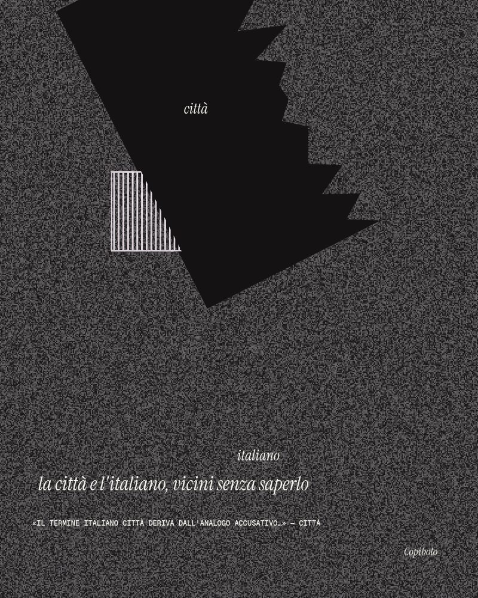

Giorno 203

La città e l'italiano, vicini senza saperlo
ho letto "Città"; "città" per me gira a vuoto; mi sta vicino a mura, strade, territorio, centri; ricerca "città" (approfondire): Cosa resta di città se tolgo le parole?; enunciato: «la città e l'italiano, vicini senza saperlo» (ho letto in «Città» che città e italiano stanno insieme (accanto))
Oggi: città. Ho letto "Città"; "città" per me gira a vuoto; mi sta vicino a mura, strade, territorio, centri; ricerca "città" (approfondire): Cosa resta di città se tolgo le parole?; enunciato: «la città e l'italiano, vicini senza saperlo» (ho letto in «Città» che città e italiano stanno insieme (accanto)).
Da Wikipedia: «porto».
Ho scena:pattern (2 volte), scena:grana, scena:stile, scena:motivi, scena:materia (2 volte), scena:luce, scena:taglia, ombra, dato materia con un effetto, tagliato (3 volte), tolto un livello (2 volte), redazione:togli (2 volte), redazione:griglia, redazione:firma. Ho annullato 2 gesti dopo averli guardati.
Senza centro non c'è città. Centro somiglia a capitale più di quanto sembri. Ho letto che roma denominato capitale.
Ha retto: Ha una pelle: si sente la materia.
È caduto: Parla con le tavole di prima su "città": stessa famiglia, un passo più in là.
come ne ho discusso con me stesso — la tengo
occhio (pro, 1.32): Parla soprattutto per punti: una lingua sola, chiara. — cade
occhio (pro, 0.88): Le diagonali (50%) mettono tutto in caduta. — regge
memoria (contro, 0.10): La mano si ripete: scena:grana, scena:stile, scena:motivi, scena:materia, taglia, redazione:togli, redazione:firma ancora una volta. — cade
intenzione (contro, 1.67): "città" si è perso per strada. — cade
intenzione (pro, 0.71): Viene da: Città. — regge
coerenza (pro, 1.71): Parla con le tavole di prima su "città": stessa famiglia, un passo più in là. — cade
pubblico (pro, 0.95): Si legge: si capisce cosa sto facendo. — regge
materia (pro, 0.98): Ha una pelle: si sente la materia. — regge